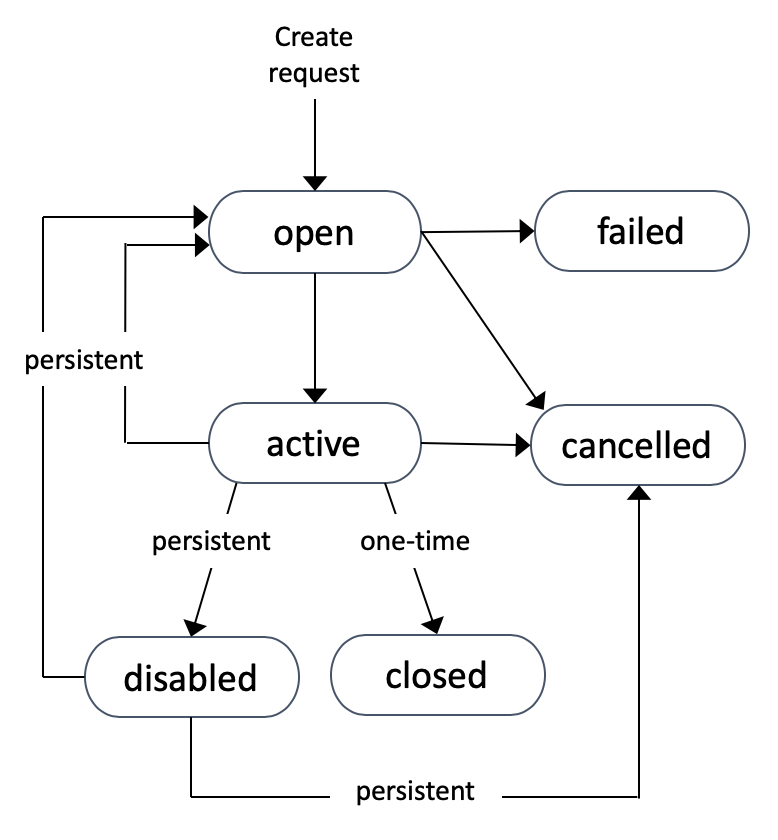
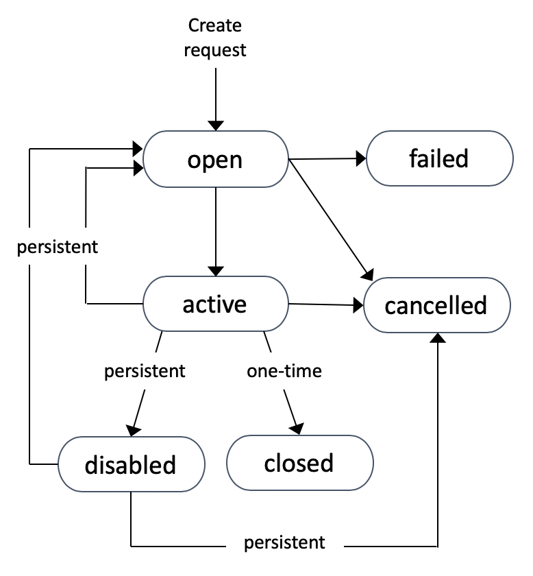

1. Amazon EC2 (Elastic Compute Cloud)
It mainly consists in the capability of :
- Renting virtual machines (EC2)
- Storing data on virtual drives (EBS)
- Distributing load across machines (ELB)
- Scaling the services using an auto-scaling group (ASG)
2. EC2 Instance Types - Overview
m5.2xlarge
- m: instance class
- 5: generation (AWS improves them over time)
- 2xlarge: size within the instance class
3. Introduction to Security Groups
- Security groups only contain allow rules
- Security groups rules can reference by IP or by security group
4. Security Groups Good to know
- Can be attached to multiple instances
- Locked down to a region / VPC combination
- Does live "outside" the EC2 – if traffic is blocked the EC2 instance won't see it
- It's good to maintain one separate security group for SSH access
- If your application is not accessible (time out), then it's a security group issue
- If your application gives a "connection refused" error, then it's an application error or it's not launched
- All inbound traffic is blocked by default
- All outbound traffic is authorised by default
5. Classic Ports to know
- 22 = SSH (Secure Shell) - log into a Linux instance
- 21 = FTP (File Transfer Protocol) – upload files into a file share
- 22 = SFTP (Secure File Transfer Protocol) – upload files using SSH
- 80 = HTTP – access unsecured websites
- 443 = HTTPS – access secured websites
- 3389 = RDP (Remote Desktop Protocol) – log into a Windows instance
6. SSH Summary Table
| SSH | Putty | EC2 Instance Connect | |
|---|---|---|---|
| Mac | √ | √ | |
| Linux | √ | √ | |
| Windows < 10 | √ | √ | |
| Windows > 10 | √ | √ | √ |
7. EC2 Instances Purchasing Options
- On-Demand Instances: short workload, predictable pricing
- Reserved: (MINIMUM 1 year)
- Reserved Instances: long workloads
- Convertible Reserved Instances: long workloads with flexible instances
- Scheduled Reserved Instances: example – every Thursday between 3 and 6 pm
- Spot Instances: short workloads, cheap, can lose instances (less reliable)
- Useful for workloads that are resilient to failure: Batch jobs, Data analysis, Image processing, Any distributed workloads, Workloads with a flexible start and end time
- 如果主动终止一个竞价实例，需要为当前这个完整小时付费
- 如果因为价格上涨，AWS终止了你的竞价实例，那么这个小时的费用会被免除
- Dedicated Hosts: book an entire physical server, control instance placement
- Dedicated Hosts can help you address compliance requirements and reduce costs by allowing you to use your existing server-bound software licenses
- Dedicated Instances: no other customers will share your hardware
- May share hardware with other instances in same account
- No control over instance placement (can move hardware after Stop / Start)
8. Differences between options
*note:
- the % discounts are different from the video as AWS change them over time – the exact numbers are not needed for the exam. This is just for illustrative purposes
- Spot Instances: Spot blocks during a specified time frame (1 to 6 hours) without interruptions (no longer available from 01/7/2021, support until 31/12/2022)
| Discount | Reservation Period | Upfront Payment | |
|---|---|---|---|
| On Demand | / | / | No |
| Reserved | Up to 72% | 1 year/ 3 years | No / Partial / All |
| Convertible Reserved | Up to 66% | ||
| Scheduled Reserved | / | 1 year only | |
| Spot | Up to 90% | ||
| Dedicated Hosts | More expensive | 3 years | |
| Dedicated Instances | / | / |
9. How to terminate Spot Instances?
 

You can only cancel Spot Instance requests that are open, active, or disabled. Cancelling a Spot Request does not terminate instances You must first cancel a Spot Request, and then terminate the associated Spot Instances
10. Spot Fleets
- Spot Fleets = set of Spot Instances + (optional) On-Demand Instances
- The Spot Fleet will try to meet the target capacity with price constraints
- Define possible launch pools: instance type (m5.large), OS, Availability Zone
- Can have multiple launch pools, so that the fleet can choose
- Spot Fleet stops launching instances when reaching capacity or max cost
- Strategies to allocate Spot Instances:
- lowestPrice: from the pool with the lowest price (cost optimization, short workload)
- diversified: distributed across all pools (great for availability, long workloads)
- capacityOptimized: pool with the optimal capacity for the number of instances